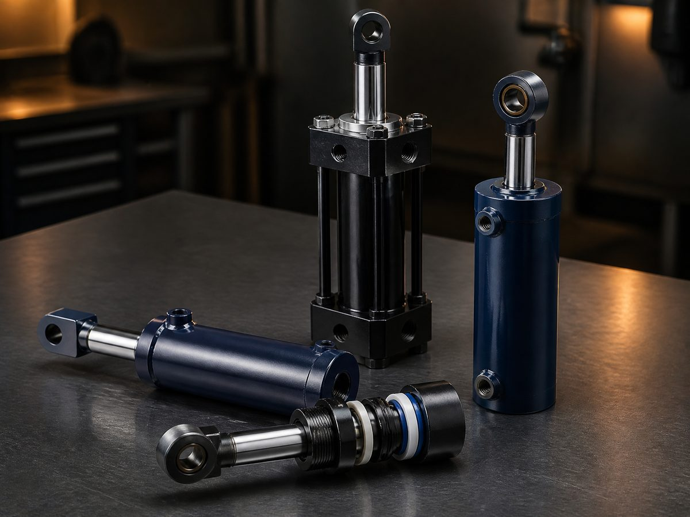
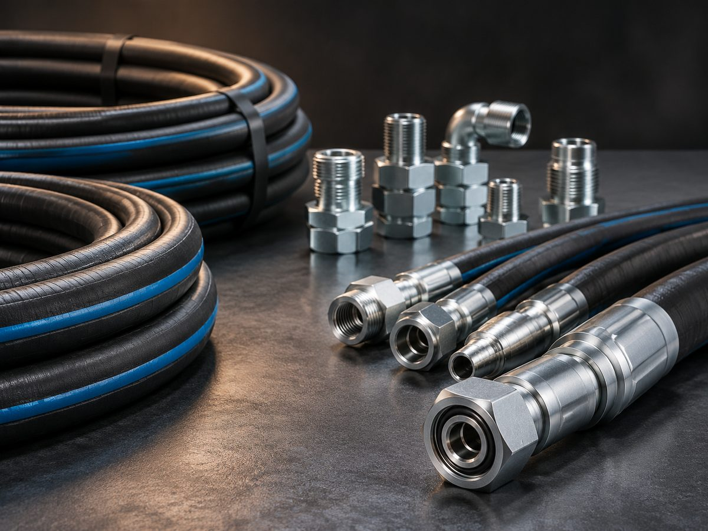
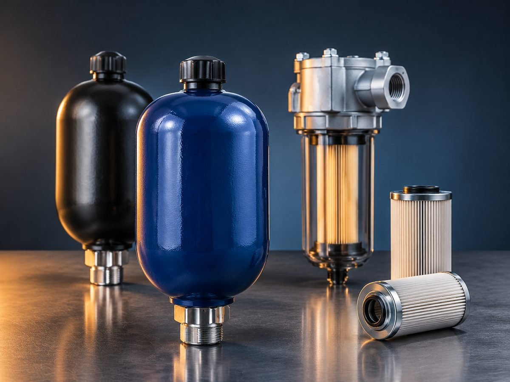
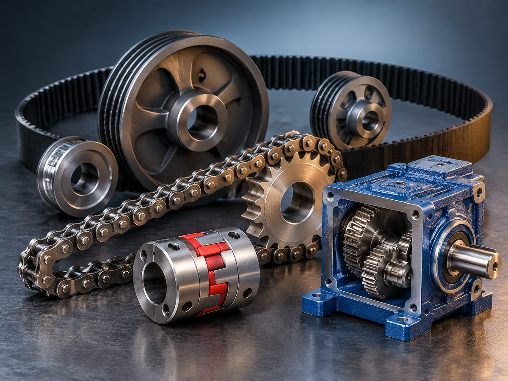

Le composant qu’il vous faut, ou son équivalent le plus juste.
Composants hydrauliques, pneumatiques et mécaniques de constructeurs européens : nous identifions la référence à partir d’un plan, d’une plaque ou d’un échantillon, et proposons une alternative compatible lorsque la pièce d’origine n’est plus disponible.

Vérins hydrauliques
Fabrication de vérins neufs et remise en état de vérins existants, quelle que soit l’origine : nous relevons les cotes, identifions les matériaux et reconstituons l’étanchéité d’origine.
| Types | Vérins simple effet, double effet, à tige simple ou traversante, vérins de presse et de levage |
|---|---|
| Fabrication | Sur plan ou à partir d’un modèle, selon vos cotes et votre environnement de montage |
| Tiges | Tiges chromées durcies, filetées ou à œil selon la conception |
| Étanchéité | Kits de joints, guidages, racleurs et joints tournants adaptés au fluide et à la pression |
| Contrôle | Assemblage et essais en atelier avant livraison |
Pompes & moteurs
Le cœur de votre installation : nous fournissons les pompes, les moteurs et les pièces de rechange des grandes familles de l’hydraulique industrielle et mobile.
| Pompes | Pompes à pistons axiaux et radiaux, pompes à engrenages, pompes à palettes |
|---|---|
| Moteurs | Moteurs hydrauliques à pistons et à engrenages, moteurs de translation et de rotation |
| Pièces | Kits de rechange, cartouches, arbres, joints et composants d’usure |
| Applications | Presses, engins de travaux publics, manutention, machines de production |

Flexibles & raccords
Une ligne hydraulique n’est fiable que si ses liaisons le sont. Nous fournissons et assemblons les flexibles, embouts et accessoires adaptés à vos pressions et à vos contraintes de montage.
| Flexibles | Flexibles haute pression une et deux tresses, gaines de protection, flexibles spéciaux |
|---|---|
| Embouts | Embouts sertis, raccords à bague, adaptateurs et réductions selon votre standard de raccordement |
| Tubes | Tubes rigides cintrés, colliers, supports et fixations |
| Service | Identification sur échantillon, remplacement à l’identique ou en version renforcée |

Accumulateurs & filtration
La propreté de l’huile et la maîtrise des à-coups de pression prolongent la vie de vos composants. Nous fournissons les accumulateurs, filtres et accessoires qui sécurisent votre circuit.
| Accumulateurs | Accumulateurs à vessie et hydropneumatiques, kits de vessie et accessoires de recharge |
|---|---|
| Filtration | Filtres en ligne, filtres de retour, filtres sous pression et reniflards |
| Cartouches | Cartouches de rechange et éléments filtrants selon le grade requis |
| Instrumentation | Indicateurs de colmatage, manomètres, thermomètres et points de prélèvement |

Transmission mécanique
À côté de l’hydraulique, GT Maroc distribue les organes de transmission mécanique qui équipent les mêmes machines : de la courroie au réducteur.
| Courroies | Courroies trapézoïdales, synchrones et plates, selon profil et longueur |
|---|---|
| Poulies | Poulies à gorges et poulies synchrones, bagues de serrage |
| Chaînes | Chaînes à rouleaux, pignons et tendeurs |
| Accouplements | Accouplements élastiques, à denture et à friction |
| Réducteurs | Réducteurs et moto-réducteurs, paliers et roulements |
Centrales & électro-hydraulique
Lorsque le besoin dépasse le composant, nous concevons et réalisons la centrale complète : dimensionnement, implantation, montage, câblage et mise en service.
| Conception | Schémas hydrauliques, calculs de débit et de pression, sélection des composants, plans d’encombrement |
|---|---|
| Réalisation | Réservoirs, groupes moteur-pompe, blocs manifold, tuyauterie et raccordement |
| Contrôle | Distributeurs directionnels et proportionnels, capteurs de pression et de débit, automate ou pilotage dédié |
| Mise en service | Installation sur site, réglages, essais et préconisations d’entretien |
Les références qui complètent l’installation.
Sur stock ou sur commande, selon les délais constructeurs. Une référence précise ? Transmettez-nous la plaque ou le plan.
Distributeurs & valves
Distributeurs directionnels, valves de pression et de débit, clapets, électrovannes.
Instrumentation
Manomètres, pressostats, débitmètres, thermomètres et capteurs de pression.
Étanchéité
Joints toriques, kits de joints, racleurs, guidages et joints tournants.
Outillage hydraulique
Crics, vérins de levage, pompes manuelles et outillage de serrage.
Échangeurs & refroidissement
Refroidisseurs d’huile, échangeurs et accessoires de régulation thermique.
Pneumatique
Vérins, raccords, tubes et accessoires pneumatiques pour vos équipements.
Les marques citées sur ce site appartiennent à leurs propriétaires respectifs et sont mentionnées à titre d’information sur les gammes distribuées. Les disponibilités et délais sont confirmés lors de la demande de devis.
Une référence à retrouver ? Envoyez-nous la plaque.
Photo de plaque constructeur, plan, échantillon ou simple description : nous identifions le composant et vous répondons avec une proposition.